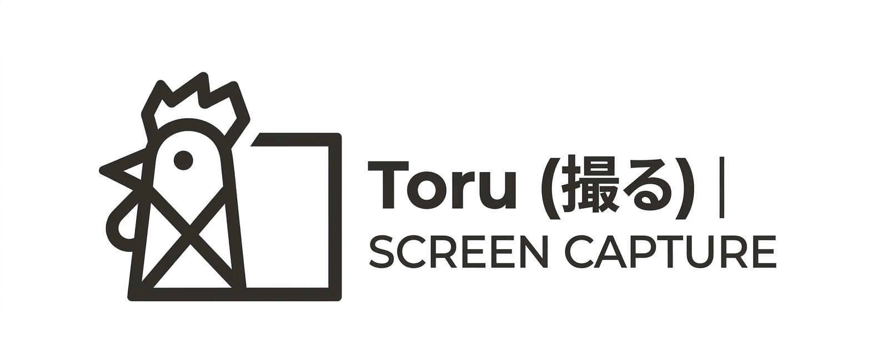

Region · Window · Full screen
Freeform crop, hover-to-highlight window pick (click captures), or the entire monitor — for stills and video.

Press a hotkey, crop a region or window, annotate, and you’re done. Screenshots land in your library automatically. Recordings get a trim editor.
Fetching latest release…
Fast overlay, clear window picking, a real annotation editor, and a library that just works.
Freeform crop, hover-to-highlight window pick (click captures), or the entire monitor — for stills and video.
Pen, shapes, arrows, text, emoji, crop, and paste-as-layer. Opens in a centered window sized to your shot.
Hit Done and it’s in your library. Choose the folder in Settings. Tray recents for quick reopen.
Optional system / app / mic audio. Stop → trim editor with copy, save, and Discord-friendly export.
Freeze the screen while you select, or keep it live so motion stays visible — toggle anytime.
Installs quietly from GitHub Releases so you stay on the latest build without a manual hunt.
From hotkey to library in a few seconds.
Windows 11 · per-user installer (no UAC) · portable zip also available. MIT licensed.